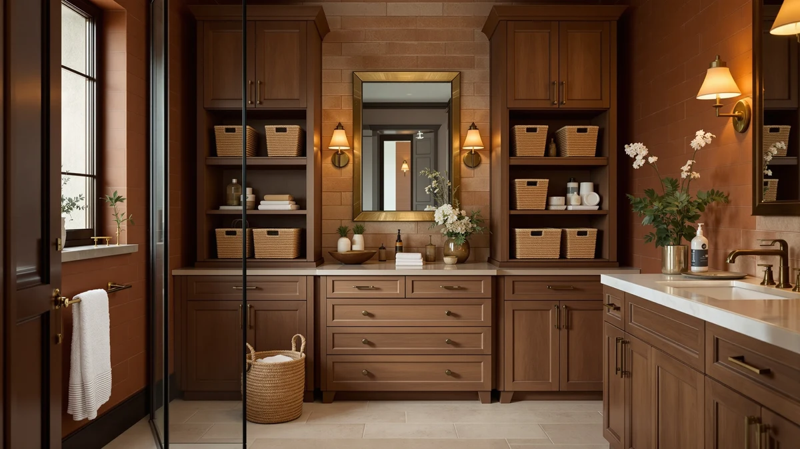

Best Baskets for Bathroom Storage (2026)
Prices and picks verified as of September 2026. Independent, reader-supported reviews.


Quick Answer
The DEKAVA Under Sink Organizer 2 is our pick for the best baskets for bathroom storage for most people, pairing two stackable wire baskets that fit around standard sink plumbing without crowding a small cabinet. If you need something smaller or more decorative, the Cupic Cupid Toilet Paper Storage basket and the CubesLand Paper Rope Scalloped Edge basket cover a tighter budget and an open shelf.
Our pick: DEKAVA Under Sink Organizer 2 — $24.99 Check Price on Amazon
Bottom line: our top pick is the DEKAVA Under Sink Organizer 2 Pack at $24.99. The best budget option is the Cupic Cupid Toilet Paper Storage Baskets at $10.99.
Things to Know Before You Buy
- Basket material determines upkeep. Metal wire baskets, like the two DEKAVA picks and the NETEL organizer, wipe down fast, while woven bamboo and paper-rope baskets need to stay away from direct splashes.
- Measure your cabinet or shelf before ordering. The CubesLand basket runs 14 by 6.3 by 3.9 inches, which fits a shelf but not every under-sink cabinet.
- Pull-out or sliding baskets, like the DEKAVA Cabinet 2 Pack, save you from kneeling and reaching to the back of a cabinet for items you use daily.
- Modular systems such as the NETEL Under Sink Organizers cost more upfront but let you reconfigure basket count and panel height as your storage needs change.
- Price per basket drops with bundled sets. A single basket from a two-pack, like the DEKAVA Cabinet 2 Pack at $25.99, often costs less per unit than a similarly sized standalone basket.
Finding the best baskets for bathroom storage usually comes down to one cramped cabinet or one cluttered shelf that never seems to stay organized for more than a week. A basket that is too large jams against the plumbing under a sink, and one that is too small just becomes another loose item to dig around. The right basket matches its material and footprint to the specific mess you are trying to contain, whether that is spare toilet paper, cleaning supplies, or a stack of folded towels.
We compared six baskets built for bathroom use, from wire under-sink organizers by DEKAVA and NETEL to woven bamboo and paper-rope options from StorageWorks, Cupic Cupid, and CubesLand. Pricing across the group runs from $10.99 to $36.99, and each basket differs enough in size and material that no single pick works for every bathroom. The DEKAVA Under Sink Organizer 2 comes out ahead for most people, at $24.99 for a pair of stackable wire baskets that clear standard sink plumbing without eating the whole cabinet.
If your bathroom problem is a shelf that needs to look finished rather than a cabinet that needs to hold more, the StorageWorks bamboo basket or the CubesLand paper-rope basket will serve you better than a wire organizer ever could. We researched manufacturer specs, current pricing, and patterns in verified owner reviews for every basket in this guide, and we break down exactly how in the sections below.
Why You Should Trust Us
Ilane Tall covers bathroom organization and small-space storage for Best Bathroom Storage, with a focus on products that hold up to daily moisture and repeated use. We do not run a physical testing lab, and we do not claim to have installed every basket in this guide in our own bathroom. Instead, we research listed materials, dimensions, and current pricing, then cross-check those specs against patterns in verified owner reviews for each product we cover. That research process, not a hands-on trial, is how we arrived at this list of the best baskets for bathroom storage.
How We Picked
We pulled every basket-style bathroom storage product in our database, then filtered out anything without a clear stated material, since a basket can mean anything from painted metal wire to real woven rattan and paper rope. We kept baskets priced under $50, a range wide enough to cover a single budget basket and a full modular organizer system without drifting into furniture-scale cabinets. We also prioritized listings with more than one basket in the package, like the DEKAVA Cabinet 2 Pack and the NETEL system, since a single basket rarely solves an entire cabinet's worth of clutter.
How We Compared
We compared the six finalists on four factors: price per basket, stated dimensions, material, and how each one is meant to be used, whether that is stacked in a cabinet, slid out on a track, or displayed on an open shelf. Where a listing included exact measurements, like the CubesLand basket at 14 by 6.3 by 3.9 inches, we flagged it against baskets with no published dimensions so you know which ones to measure for before buying. We also read through available verified reviews for recurring complaints, such as wire that bends under weight or woven material that frays, and we call those out in the pros and cons below. That side-by-side comparison is what separates the best baskets for bathroom storage from a basket that just looks the part in a listing photo.
Our Picks

DEKAVA Under Sink Organizer 2
What we like
- Two stackable metal wire baskets clear standard sink plumbing instead of one bulky bin that jams against the pipes
- At $24.99 for the pair, it costs less per basket than most single-basket organizers in this guide
- Open wire construction keeps items visible, so you can grab what you need without pulling the whole basket out
Flaws but not dealbreakers
- Wire construction is not the right pick if you want a basket that looks decorative on an open shelf
- Stacked baskets need a cabinet tall enough to clear both tiers, so measure before assuming it will fit
| Material | Metal / wood |
| Size | — |
The DEKAVA Under Sink Organizer 2 is our top pick among the best baskets for bathroom storage because it solves the most common version of this problem: a cabinet with pipes running through the middle of the usable space. The two-basket design stacks around that obstruction instead of forcing you to work around it with one oversized bin, and the metal wire frame holds its shape under stacked cleaning supplies or spare toiletries better than lighter plastic baskets.
At $24.99 for both baskets, this organizer lands in the middle of the price range we researched, well under the NETEL modular system but above the single budget baskets. Owners consistently point to the stacking design as the reason it works in cabinets that defeated other organizers, since each basket can sit at a different height around the plumbing. The open wire front means you can see what is inside without sliding anything out, though it also means the baskets show their contents on a shelf, which is a tradeoff worth knowing before you buy. Among the best baskets for bathroom storage we compared, this is the pair we would buy first for a typical under-sink cabinet.

StorageWorks Toilet Paper Storage with
What we like
- Bamboo weave and hinged lid look more like a finished accessory than a plastic bin on an open shelf or countertop
- Medium size holds several rolls of toilet paper without taking up as much space as a full storage cabinet
- Lid keeps rolls out of sight and away from splashes near a sink
Flaws but not dealbreakers
- At $20.99, it costs more than the Cupic Cupid basket despite holding a similar amount
- Woven bamboo needs to stay away from direct water contact, so it is not the right choice for inside a shower or on a wet counter
| Material | Bamboo |
| Size | Medium |
The StorageWorks Toilet Paper Storage basket trades the utilitarian look of a wire organizer for a woven bamboo exterior and a hinged lid, which matters if your toilet paper basket sits in view rather than tucked inside a cabinet. The medium size holds enough rolls to avoid a mid-week restock without dominating a vanity or floor corner, and the lid keeps the contents out of sight when guests use the bathroom.
Priced at $20.99, this basket sits above the budget Cupic Cupid pick but below the wire under-sink organizers in this guide. That gap comes from the added cost of a woven bamboo build over stamped metal. Owners report that the bamboo finish holds up well with light, occasional wiping, though it is not built for the kind of direct water exposure a wire basket can shrug off. If your bathroom storage problem is more about appearance than raw capacity, this basket does that job better than anything else we researched here.

Cupic Cupid Toilet Paper Storage
What we like
- At $10.99, it is the least expensive basket in this guide by a wide margin
- Compact size fits on a narrow shelf or the back of a toilet tank where larger baskets will not
- Simple single-purpose design means there is nothing to assemble or configure
Flaws but not dealbreakers
- Small capacity means it holds fewer rolls than the StorageWorks or NETEL options
- Metal and wood build is functional rather than decorative, so it will not dress up an open shelf the way the CubesLand basket does
| Material | Metal / wood |
| Size | — |
The Cupic Cupid Toilet Paper Storage basket is the pick for anyone whose only problem is a handful of loose rolls with nowhere to go. At $10.99, it costs roughly half of the next cheapest basket we researched, and its compact footprint fits spaces the larger organizers in this guide can't, including narrow shelves and the top of a toilet tank.
This is not a basket built to solve a full cabinet's worth of clutter, and it does not try to be. Verified reviews describe it as a straightforward, no-assembly basket that does one job without complaint, though a few owners note the small size fills up faster than they expected if they buy in bulk. For a single, inexpensive fix to a small toilet paper storage problem, it is the best value among the baskets we compared.

CubesLand Paper Rope Scalloped Edge
What we like
- Scalloped paper-rope edge gives it a finished, boutique look that the wire organizers in this guide do not have
- Wide, shallow 14 by 6.3 by 3.9 inch shape works well for folded hand towels or rolled washcloths on a countertop
- Priced at $18.99, it costs less than most of the decorative options we researched
Flaws but not dealbreakers
- Shallow depth means it is not built to hold bulkier items like a full stack of bath towels
- Paper-rope material is not meant for wet environments, so keep it away from a tub or shower splash zone
| Material | Metal / wood |
| Size | m - 14 X 6.3 X 3.9in |
The CubesLand Paper Rope Scalloped Edge basket is built for bathrooms where storage doubles as decor. Its 14 by 6.3 by 3.9 inch footprint is wider and shallower than a typical under-sink basket, which makes it a better fit for a countertop or open shelf than a cramped cabinet, and the scalloped paper-rope edge gives it a boutique look that none of the metal wire baskets in this guide can match.
At $18.99, it is priced closer to the budget end of this lineup despite the more decorative build, which owners in verified reviews point to as good value for a basket meant to be seen rather than hidden. The tradeoff is depth: this basket suits folded washcloths, rolled hand towels, or grooming accessories better than bulkier items that need more vertical space. If you want a basket for bathroom storage that also looks intentional sitting out in the open, this is the one we would pick.

NETEL Under Sink Organizers and
What we like
- Four panels and four baskets let you configure sections by category instead of piling everything into one bin
- Modular panel design adjusts to different cabinet heights, which fixed-height baskets cannot do
- Largest total storage capacity of any product in this guide
Flaws but not dealbreakers
- At $36.99, it is the most expensive basket system we researched here
- Assembly of four panels and four baskets takes longer than dropping in a single pre-formed basket
| Material | Metal / wood |
| Size | 4 Panels and 4 Baskets |
The NETEL Under Sink Organizers and Baskets set is the pick for a cabinet that has outgrown a single basket, or even a stacked pair. Four adjustable panels create separate compartments, and four included baskets slot into those sections, which means cleaning supplies, spare toiletries, and backup toilet paper can each get their own space instead of one large bin where everything ends up mixed together.
Priced at $36.99, it costs more than any other product in this guide, and that price reflects both the panel hardware and the four baskets included in the set. Owners in verified reviews describe the modular panels as the standout feature for adjusting to uneven cabinet heights, a common problem in older bathroom vanities. The tradeoff is setup time: this is the only product here that requires assembling panels before you can start organizing, rather than placing a finished basket on a shelf. For a cabinet that needs real structure, not one more loose container, this is the strongest option we compared.

DEKAVA Cabinet 2 Pack Under
What we like
- Sliding basket design pulls forward on a track, so you do not have to kneel and reach to the back of a cabinet
- Two matched baskets in the pack give you separate storage for two categories of items without buying twice
- Metal wire build holds up under the weight of stacked cleaning bottles better than lightweight plastic drawers
Flaws but not dealbreakers
- At $25.99, it costs slightly more than the DEKAVA Under Sink Organizer 2, its closest sibling in this guide
- Sliding tracks need to be mounted, which takes more setup time than a basket you just set down
| Material | Metal / wood |
| Size | — |
The DEKAVA Cabinet 2 Pack Under basket set solves a different problem than the stackable DEKAVA organizer earlier in this guide: instead of stacking baskets around plumbing, it slides them forward on a track so you can see and reach everything without kneeling on the bathroom floor. The two matched baskets in the pack work well split between two categories, such as cleaning supplies in one and backup toiletries in the other.
At $25.99, it costs about a dollar more than its stacking sibling, a small premium for the added convenience of a sliding mechanism. Verified reviews describe the tracks as sturdy enough to hold a fully loaded basket without sagging, though the mounting hardware takes more time to install than setting a basket on a shelf. For anyone who is tired of reaching into the back corners of an under-sink cabinet, this pull-out design is worth that extra setup time.
Quick Comparison
| Product | Material | Price | Rating | Best for | Get it |
|---|---|---|---|---|---|
| DEKAVA Under Sink Organizer 2 | Metal / wood | $24.99 | 4 | Best overall pick | View on Amazon → |
| StorageWorks Toilet Paper Storage with | Bamboo | $20.99 | 4 | Decorative toilet paper storage | View on Amazon → |
| Cupic Cupid Toilet Paper Storage | Metal / wood | $10.99 | 4 | Best budget pick | View on Amazon → |
| CubesLand Paper Rope Scalloped Edge | Metal / wood | $18.99 | 4 | Best for open-shelf display | View on Amazon → |
| NETEL Under Sink Organizers and | Metal / wood | $36.99 | 4 | Best for a fully loaded cabinet | View on Amazon → |
| DEKAVA Cabinet 2 Pack Under | Metal / wood | $25.99 | 4 | Best pull-out basket design | View on Amazon → |
The Competition
We also looked at fabric and canvas storage baskets during research, but left them out of this guide because they hold up worse to bathroom humidity than the metal wire and bamboo options above. Verified owner feedback on similar fabric listings points to mildew and sagging within a few months of daily use near a sink.
Freestanding basket towers without a stacking or panel system were another category we passed on. A single tall basket looks like it should organize a whole cabinet, but without dividers it turns into the same pile of mixed items a smaller basket already creates, just in a bigger container. If your bathroom needs more structure than any basket alone can provide, our guide to the best bathroom storage cabinets covers that larger-scale option. Across every category we researched, the DEKAVA Under Sink Organizer 2 remains our top choice among the best baskets for bathroom storage.